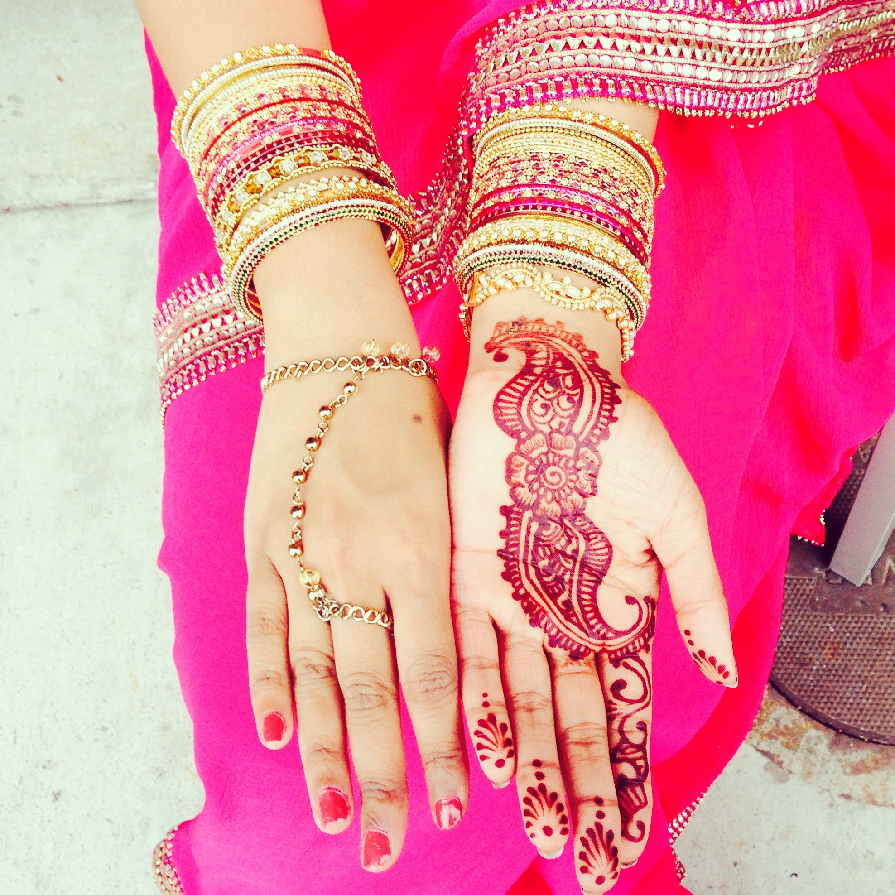

-
~2013
Just Sanj
I grew up in the Bay Area, CA and had really good handwriting because I didn't use a computer too often. I golfed and danced, walked home, watched HGTV, and learned to cook. In between traveling and school, I chose to attend New York University.
-
~2014
Added a plus
Began to take lots of pictures, and because I couldn't afford to take more classes, I sat in on a few to learn design and visual aesthetics. I chose to study economics and computer science, and noticed my handwriting started to have a lower quality because I was typing more than handwriting...oops! I interned at VMware, joined Delta Sigma Pi (a business oriented professional society), and started an entrepreneurial project, called Pilot, that catapulted my coding career. I also spent some time in China!
-
~2015
Added another plus: sanjplusplus
I interned at Cisco, became the Vice President of the Entrepreneurial Exchange Group at NYU Stern, joined Tech@NYU's eboard as it's After Hours Director, started a research project with NYU Courant, joined as the Panels Director for the NYU Entrepreneur's Festival, and was employed as a TA for a "flipped education" Calculus class. I have learned how to teach, which was one of the most challenging things to do; explaining how math and computer science works at a level that doesn't scare the other person away is an important skill in encouraging tech engagement. I visited New Zealand, did a bunch of extreme sports and believe that Hobbiton is heaven on earth after nerding out at the Shire.
-

Live
And chilling
I'm gearing up to give a Ted Talk on entrepreneurship, teaching students how to complement computer science and their ambitions, and planning to travel a whole bunch. I was in Russia, France, Switzerland and Monaco, been Instagramming and blogging a bit about my adventures, and looking forward to presenting my research later this year. My handwriting is not terrible but it's no longer font-like, so I practice writing every day.
-